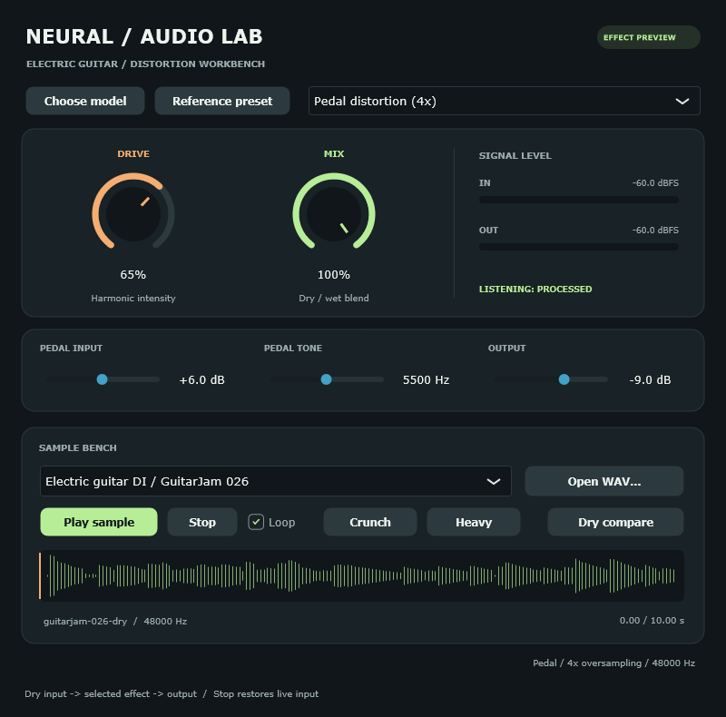

Play a dry electric guitar through distortion
The v4 preview includes three real dry electric-guitar excerpts and applies the selected effect during playback. The supplied recordings contain no baked-in distortion. The default Pedal distortion (4x) is a conventional DSP effect. Neural model selects the existing learned model; no neural retraining or hardware-match claim is implied by the pedal demo.
.\exports\preview-v4\Launch-NeuralFX.cmd- Set the standalone audio-device rate to 48,000 Hz.
- Select an Electric guitar DI / GuitarJam clip and press Play sample.
- Try Crunch and Heavy, then adjust Drive and Mix. Use Pedal Input to push saturation, Pedal Tone to reduce bright harmonics, and Output to set the playback level.
- Use Dry compare to hear the original input with the same buffering latency. This comparison preserves the original level; it is not loudness matched. Stop returns to live input.

Signal path and presets
The pedal oversamples each channel by 4, applies a smoothed input boost and tanh saturation with Drive mapped to 0..36 dB of additional gain, downsamples, removes DC, and applies a two-stage low-pass tone filter. The wet path is mixed with the original delayed dry input, then trimmed at output. Drive, Input, Mix and Output use 15 ms ramps. Oversampling storage is prepared before processing; callback sizes larger than 512 samples are handled in chunks.
| Preset | Drive | Input | Tone | Output | Mix |
|---|---|---|---|---|---|
| Crunch | 65% | +6 dB | 5,500 Hz | −9 dB | 100% |
| Heavy | 90% | +12 dB | 4,500 Hz | −12 dB | 100% |
The sample selector restores each clip's Crunch settings. Simply reopening the editor preserves the current controls. Input and Tone apply to the pedal and are disabled for Neural mode. Output applies to either engine. Reference presets select Neural mode and reset input/output trims, preserving their original control meaning. Drive has different mappings in the two engines.
The default model block is 128 samples and the preview reports 128 samples of transport latency in both modes (about 2.67 ms at 48 kHz). The pedal compensates its oversampling delay within this transport delay. Its tone filter still has the ordinary phase response of a filter. Mix=0 with Output=0 dB and host bypass reproduce the delayed original dry sample. Dry compare also bypasses output trim. Mode/model transitions are not crossfaded; target-device and DAW acceptance remain separate.
Source recordings and permission to reuse
The publisher's GuitarJam dataset card declares CC0-1.0 and describes clean direct-input Stratocaster performances without effects or amplifiers. The local pack uses source files 026.wav, 050.wav and 085.wav from its test folder, pinned to revision 2d467bfec90af19301b01123494f4b2ba64c5a3a. These are audition inputs, not newly designated research train/test splits.
Each excerpt uses the first ten seconds, resampled from 44.1 to 48 kHz with a polyphase filter and 5 ms edge fades. Source amplitude is preserved; no peak or RMS normalization is applied. Their approximately −30 dBFS RMS explains why input gain matters for saturation. See the retained publisher declaration, license record, clip manifest and pinned acquisition specification.
What was actually checked
- Three guitar clips rendered through Light, Crunch and Heavy. Tested preset peaks remained below full scale. Heavy changed the waveform beyond a best-fit linear gain on every clip.
- A 1 kHz sine check measured approximately 0.39% harmonic distortion at Light and 27.0% at Heavy, demonstrating nonlinear harmonic generation rather than only volume gain. This uses 100% Mix, Input +6 dB, Tone 5,500 Hz and Output −9 dB, with Drive 10%/90%; the guitar Heavy preset uses the separate settings above.
- Bypass and Mix=0 reproduced the delayed dry input; silence produced exact zeros; both channels agreed. The core processing result stayed consistent at host blocks 17/64/113/128/256/512.
- Seven actual VST3 guitar-host cases matched the directly checked pedal processor. Playback looping, single-pass, Dry compare, Stop and state/reset checks passed. The official validator passed all 47 tests unloaded and model-loaded for both engine startup modes.
- 60 Python tests passed. No executable C++ new/new[] calls were observed in the instrumented pedal processing calls; this excludes malloc, external DLL internals and audio-device hosting.
Recorded guitar distortion evidence contains the source and binary identities, waveform/level metrics, host checks and validator results. These measurements do not establish subjective quality, hardware-pedal fidelity or sustained target-host scheduling. The earlier neural model's sustained timing failure remains recorded and unchanged.
Offline comparisons and reproduction
exports/preview-v4/audition/ contains dry, Light, Crunch and Heavy WAVs generated through the actual processor, aligned to the dry sample length. The live app processes the raw DI again; it does not play these wet files behind the controls. Their loudness differs by preset. The separate Renderer/nafx-render.exe CLI renders the neural graph; the effect-check harness below produces the pedal comparison WAVs.
python -m neural_fx guitar-samples --output runs/my-guitar-samples
python -m neural_fx native-build --plugin
python -m neural_fx package-preview --validation runs/native-v2-final --output exports/my-guitar-preview --samples runs/my-guitar-samples
python tools/validate_guitar_preview.py --preview exports/my-guitar-preview --output runs/my-guitar-checkUse fresh output directories. The importer verifies original audio and dataset-card hashes; it downloads only the pinned files when they are absent from the cache. The validator harness writes listenable examples in its output's audition/ directory and requires the official validator built with python -m neural_fx validator-build.
Neural/reference workflow and remaining acceptance / Synthetic fixtures / Third-party notices / Documentation index